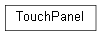

framework.module.touch
Pachymeter Automated Software Verification Rig Touch Module Implementation.
Classes
TouchPanel: Support Touch Panel Control.
- class framework.module.touch.TouchPanel
Support Touch Panel Control.
Touch Panel Control/Automation/Simulation is provided via the Total Phase Aardvark I2C/GPIO host adapter.
Inheritance
- is_tp_reset() bool
Checks whether TP_RESET# is active (low).
- Returns
returns True if TP_RESET# is active (low), False if TP_RESET# is inactive (high)
- reset()
Reset the TouchPanel object to its default state.
- select_aa_i2c() None
Sets AA_TP_I2C_EN inactive (low).
When AA_TP_I2C_EN is inactive DUT I2C is routed to the Aardvark.
- select_tp_i2c() None
Sets AA_TP_I2C_EN active (high).
When AA_TP_I2C_EN is active DUT I2C is routed to the Touch Panel.
- set_aa_int(active: bool) None
Sets AA_INT active (high) or inactive (low).
- Parameters
active – True or False.
- touch() None
Perform a simulated touch sequence.